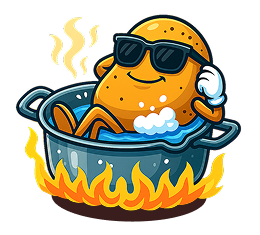

Cuando las papas queman
entramos en acción.
En las agencias los cierres de campaña no esperan. Los cambios a último momento, las 25 versiones por formato, los deadlines imposibles...
Por eso creamos PAPA CALIENTE: un estudio de producción creativa formado por diseñadores con años de experiencia en publicidad, listos para resolver lo que quema.
Por eso creamos PAPA CALIENTE: un estudio de producción creativa formado por diseñadores con años de experiencia en publicidad, listos para resolver lo que quema.

Adaptamos piezas digitales, redes, vía pública, prensa, etc...

Entregamos archivos finales, listos para publicar.

Hablamos el mismo idioma de cuentas y creatividad, porque venimos de ahí.

Estás buscando descomprimir a tu equipo?. La próxima papa caliente, la cocinamos nosotros.
Casos de
Ebullición

Mientras todo hervía, nosotros nos sumergimos en el brief como quien entra a un spa.
Estas son algunas campañas donde en vez de desesperar, activamos con calma y las sacamos del fuego... papita pal loro.
Estas son algunas campañas donde en vez de desesperar, activamos con calma y las sacamos del fuego... papita pal loro.

{kind=link}
{kind=link}
{kind=link}
{kind=link}
{kind=link}
{kind=link}
{kind=link}
{kind=link}


Producción Creativa para
Agencias y Equipos de Marketing